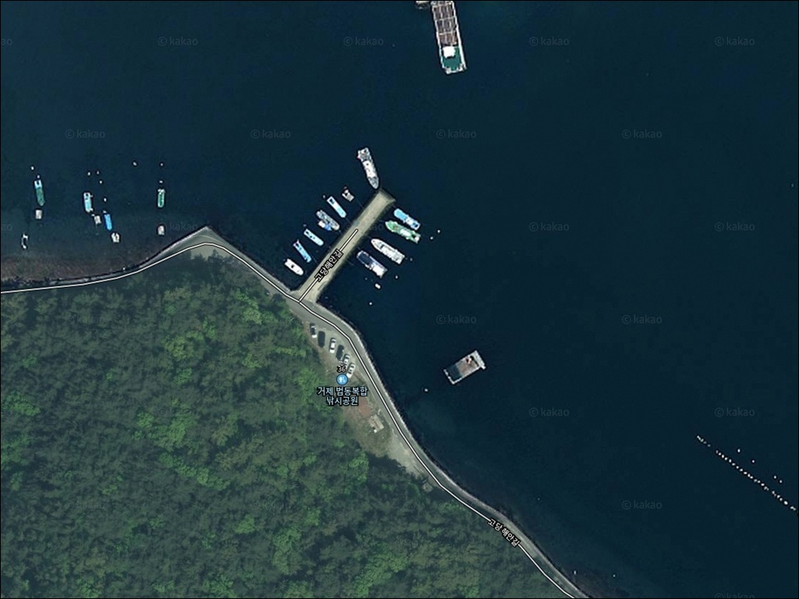
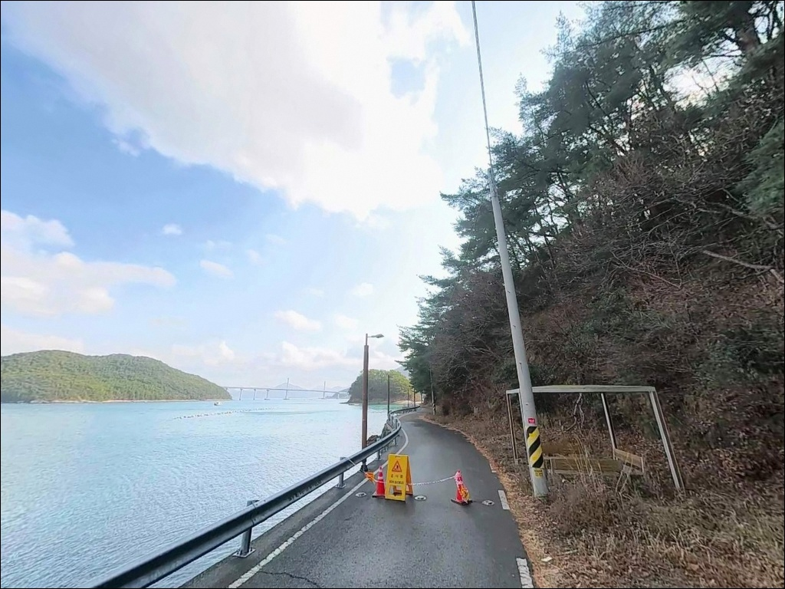
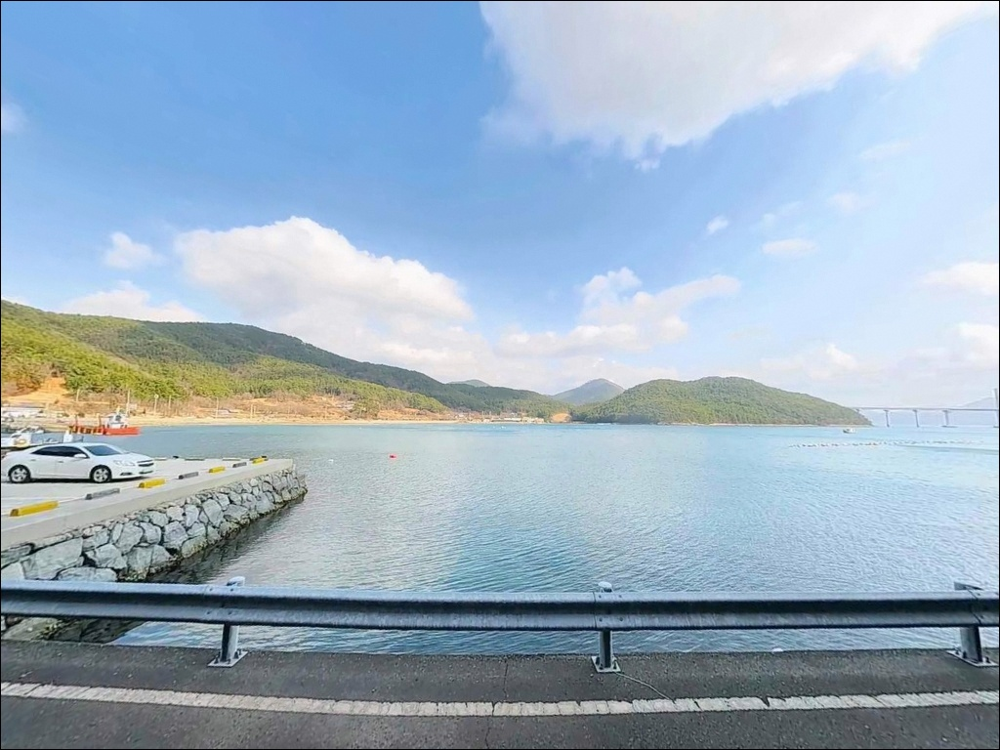
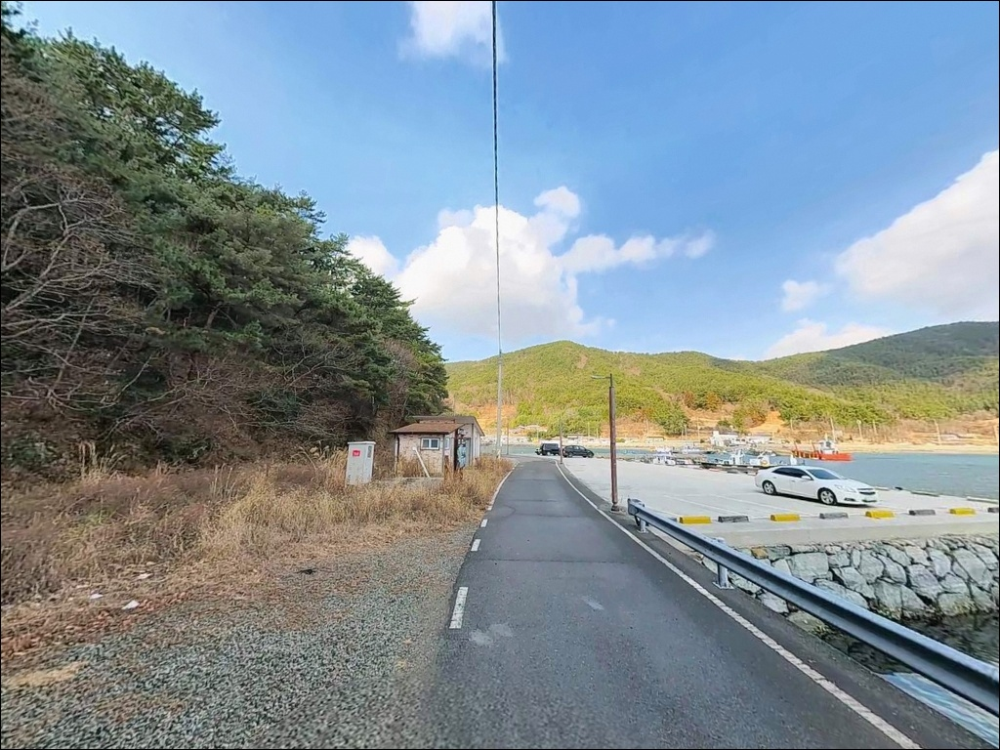
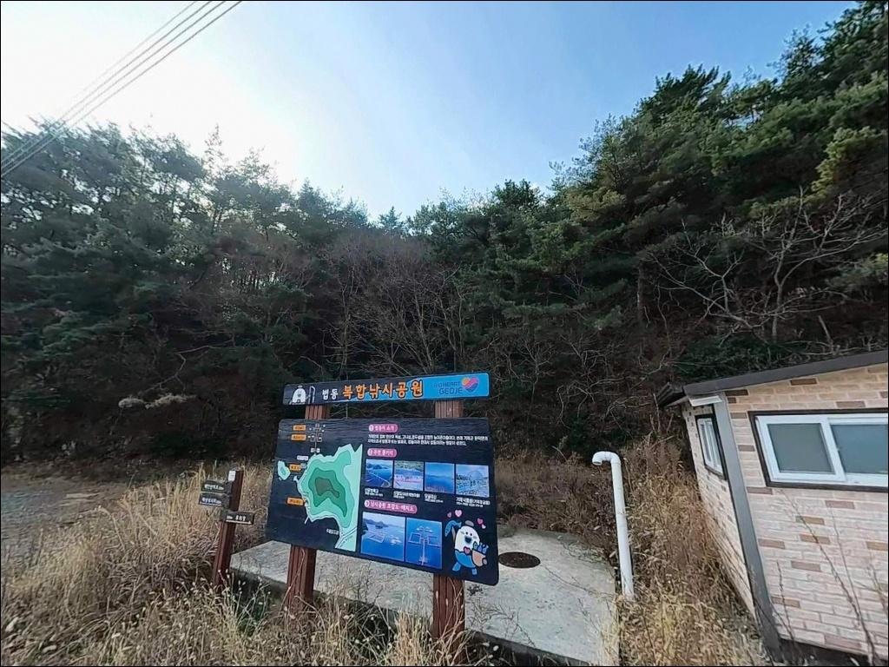
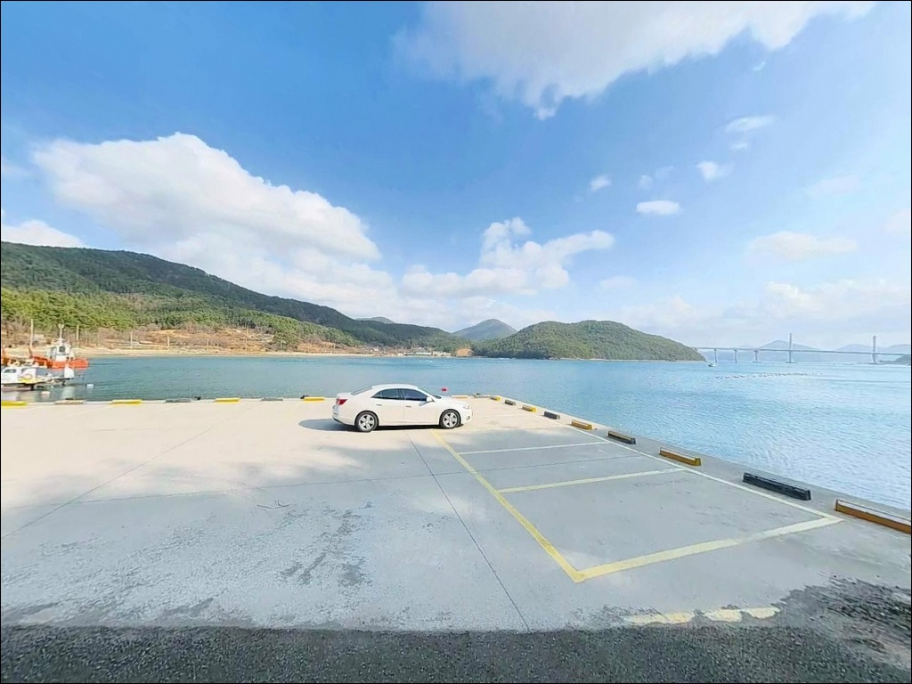
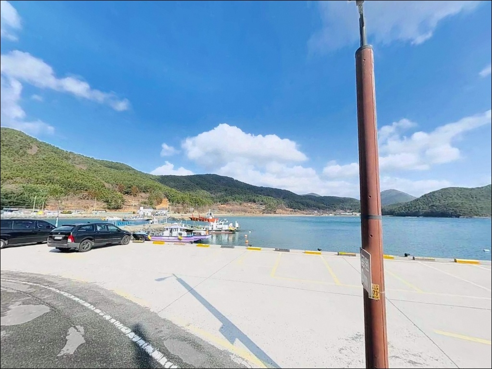
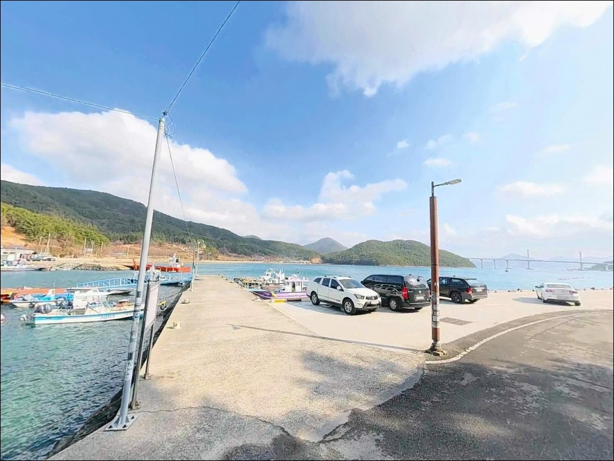
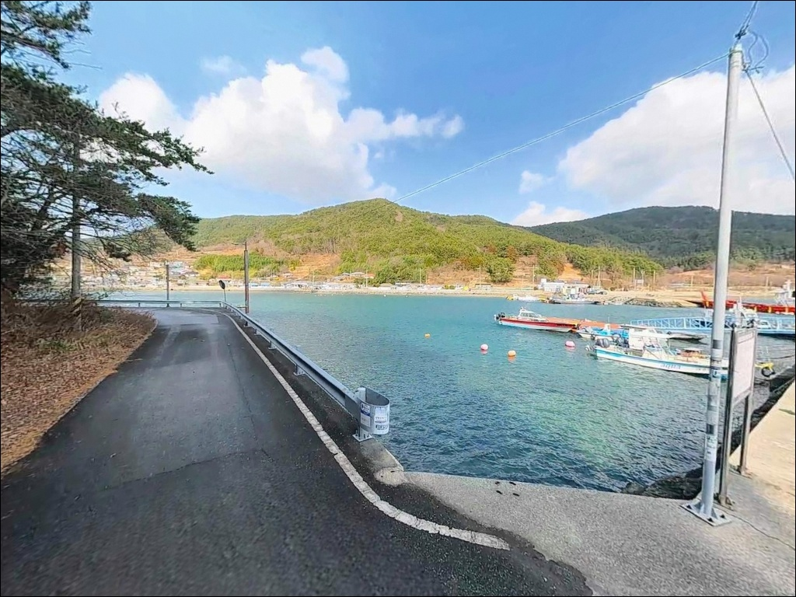

이 페이지에는 광고(제휴 링크 포함)가 있으며, 광고 링크를 통해 구매하면 운영자가 판매 수익 또는 수수료를 받을 수 있습니다. 포인트 사진: 카카오맵 스카이뷰·로드뷰. 이 페이지의 지도·사진 이미지는 카카오맵의 실제 서비스 이미지와 다를 수 있습니다.

법동복합낚시공원
경남 거제시 거제면 법동리 536-26
운영 중단 이력이 있는 유료 시설로,
사전 확인 없이 방문하면
공원 문이 닫혀 있는 상황을 맞닥뜨릴 수 있습니다.
조황 검색보다 운영 여부 확인이
이 포인트 방문의 첫 번째 판단 기준입니다.
거제만 내측에 자리한 법동복합낚시공원은
해상 가두리 구조물 위에서 낚시하는 체험형 시설입니다.
외해 방파제나 갯바위와는 성격이 다른 공간이며,
잔잔한 만 환경에서 손맛을 즐기는
가족·입문자 중심의 낚시 공원입니다.
이 글은
법동복합낚시공원의 시설 구조와 진입 환경,
차박 여건, 인근 자연 포인트 연계 방법에 집중합니다.
조황 단정이나 특정 어종 보장은
이 글의 범위에 포함되지 않습니다.

법동리 진입로는 전 구간 포장도로로 연결되어 있어
차량 진입에 큰 어려움이 없는 편입니다.
해안도로를 따라 낚시공원 방향으로 진입하며,
비포장 구간 없이 공원 입구까지 도달합니다.
마을 안쪽 도로 특성상 폭이 다소 좁은 구간이 있어,
대형 캠핑카는 입구 공터에서 회차 여건을 먼저 살피는 편이 좋습니다.
공원 주변에는 공영주차장과 입구 앞 공터가
주차 공간으로 활용됩니다.
성수기에는 방문객 차량이 몰릴 수 있어
이른 시간 도착이 자리 확보에 유리합니다.
법동마을 방파제는 공원에서 도보로 이동 가능한 거리에 위치합니다.
차량 없이도 자연 포인트로 이동할 수 있어,
공원 낚시와 방파제 낚시를 하루 동선 안에 묶는 방식이
이 구역을 효율적으로 활용하는 방법입니다.

법동복합낚시공원은 유료 운영 시설로,
공원 내부에서의 취사·취침은 허용되지 않습니다.
차박을 병행할 경우 공원 주변 공영주차장이나
해안도로변 일반 주차 가능 구간을 기준으로
스텔스 차박 위주로 계획하는 편이 현실적입니다.
공원 주변은 민가 밀집도가 낮고
야간 차량 통행이 많지 않은 편입니다.
공원 내 안전 조명이 일부 있어
완전 암흑 환경은 아니나,
개인 조명 장비는 별도로 챙기는 편이 좋습니다.
소음과 쓰레기 관리는 기본 매너입니다.
마을 인근 환경이므로 야간 취사 장비 방치나
텐트 설치는 삼가는 것이 적절합니다.
출조 후 조용히 하룻밤 머무는 스텔스형 차박에는
공원 주변 공영주차장 구간이 무난한 편입니다.

거제면 중심부가 차량으로 10분 내외 거리에 있습니다.
편의점, 마트, 주유소, 식당이 거제면사무소 인근에
밀집해 있어 출조 전 보급이 편리한 편입니다.
반경 3km 이내에 셀프 주유소도 위치하며
거제면 중심부를 기점으로 삼으면 식수·얼음·소품 보급을
한 번에 해결할 수 있습니다.
공원 내에는 화장실이 갖춰져 있습니다.
운영 시간 외에는 이용이 제한될 수 있으므로
장시간 현장 체류를 계획한다면
공원 주변 공중화장실 위치를 미리 파악해 두는 편이 좋습니다.
산달도는 산달연륙교로 차량 진입이 가능하며,
섬 내부에 방파제 낚시 포인트가 분포합니다.
공원 이용 후 이동하는 2차 낚시 동선으로
활용하기 좋은 거리에 있습니다.

법동복합낚시공원은 운영 중단 이력이 있는 시설입니다.
방문 전 운영 여부를 전화 또는 거제시 공식 채널을 통해
반드시 확인하는 것이 첫 번째 준비 사항입니다.
유료 낚시공원은 방문 전 운영 여부 확인이
조과보다 먼저 챙겨야 할 판단 기준입니다.
통상 운영 시간은 오전 10시부터 오후 5~6시 사이이며,
월·화요일은 휴무입니다.
성수기나 공휴일에는 정상 운영되는 경우가 있으나
사전 확인 없이 방문하면 입장이 불가능한 상황이 생길 수 있습니다.
공원에서 제공하는 낚싯대와 미끼 사용 방침은
운영 시기별로 달라질 수 있습니다.
개인 장비 반입 여부도 방문 전 확인이 필요합니다.
기상 악화 시에는 해상 데크 진입이 제한될 수 있으니
출발 당일 아침 기상청 남해안 예보를 한 번 더 확인하는 습관이 좋습니다.

법동복합낚시공원이 자리한 법동만은
거제만 내측에 위치하여 외해 파도와 조류 영향이 적은 편입니다.
리아스식 해안 특성상 물살이 약하고 수면이 잔잔하며,
만조 시 공원 주변 수심은 8~12m 안팎으로
가두리 내부에서도 채비가 안정적으로 유지됩니다.
가두리형 구조물 특성상 그물 주변과 구석 자리에
어군이 집중되는 경향이 있습니다.
데크 가장자리와 코너 자리가 입질 확률이 높은 편이며,
좌석 선택 시 그물 경계선과 가까운 자리를 우선하는 방식이
이 포인트 구조에 맞습니다.
거제 내만권 해역 특성상 감성돔, 참돔, 우럭,
전갱이, 볼락 계열이 서식하기 좋은 환경입니다.
봄과 가을 시즌에 어종 활성도가 높아지는 경향이 있으며,
최신 조황은 방문 전에 꼭 검색해 보시기 바랍니다.

법동복합낚시공원의 가두리 구조에서 가장 잘 맞는 방식은
찌낚시입니다.
수심이 일정하고 조류 영향이 적은 만 안쪽 환경에서는
찌를 원하는 수심층에 고정해 놓고
천천히 입질을 기다리는 반유동 채비가
이 공원의 낚시 조건과 잘 맞습니다.
공원 시설에서 제공하는 낚시대와 채비를 이용하는 방식도 있어
도구 준비 없이 방문하는 가족 단위 방문자에게도
문턱이 낮은 편입니다.
찌낚시란 물 위에 띄운 찌를 수심 조절 기준으로 삼아
미끼가 특정 수심층에 머물도록 하는 낚시 방식입니다.
공원 인근 법동마을 방파제에서는
원투낚시와 루어낚시가 가능한 자연 조건을 갖추고 있습니다.
방파제 외항 쪽에서는 볼락 라이트게임,
내항 쪽에서는 원투 채비로
바닥 어종을 노리는 방식이 잘 어울리는 구조입니다.
산달도방파제는 산달연륙교를 건너면 닿는 자연 방파제 포인트입니다.
조류 소통이 활발한 편이어서 루어낚시와 에깅을 즐기는 낚시인이라면
공원 이용 후 이동해 탐색해 볼 만한 곳입니다.

법동복합낚시공원이 휴무이거나 자리가 없을 때
가장 먼저 이동할 곳은
법동마을 방파제입니다.
공원에서 도보로 이동 가능한 거리에 위치하며,
원투낚시와 찌낚시 모두 가능한 자연 조건을 갖추고 있습니다.
주소는 경남 거제시 거제면 법동리 506-7 일대입니다.
산달연륙교를 건너면 산달도방파제에 닿습니다.
법동리에서 약 2~3km 거리이며,
자연 조류가 흐르는 방파제 환경에서
루어낚시, 에깅, 원투낚시를 복합 운용하기에
적합한 조건입니다.
거제도 북서부 방파제권(어구마을 방파제, 녹산마을 방파제)은
법동리 기준 5~7km 거리입니다.
산달도 여건이 여의치 않을 때
2차 이동 대안으로 활용할 수 있는 권역입니다.

법동복합낚시공원은 가두리 체험형 시설이라는 점에서
일반 방파제 낚시와는 성격이 다릅니다.
낚시 입문자나 가족 단위 방문이라면
부담 없이 즐길 수 있는 환경이고,
진입과 주차도 불편함이 적은 편입니다.
다만 운영 중단 이력이 있는 시설이니만큼
방문 당일 운영 여부 확인을 첫 번째 체크 항목으로 두는 것이
헛걸음을 막는 유일한 방법입니다.
법동마을 방파제와 산달도방파제를 함께 동선에 넣으면
자연 낚시와 체험 낚시를 하루에 고루 경험할 수 있습니다.
차박을 병행하는 낚시인이라면
공원 인근 공영주차장에서 조용히 하룻밤 머물고
이른 아침 산달도방파제로 이동하는 동선이
이 권역에서 낚시와 차박을 가장 무리 없이 엮는 방법입니다.